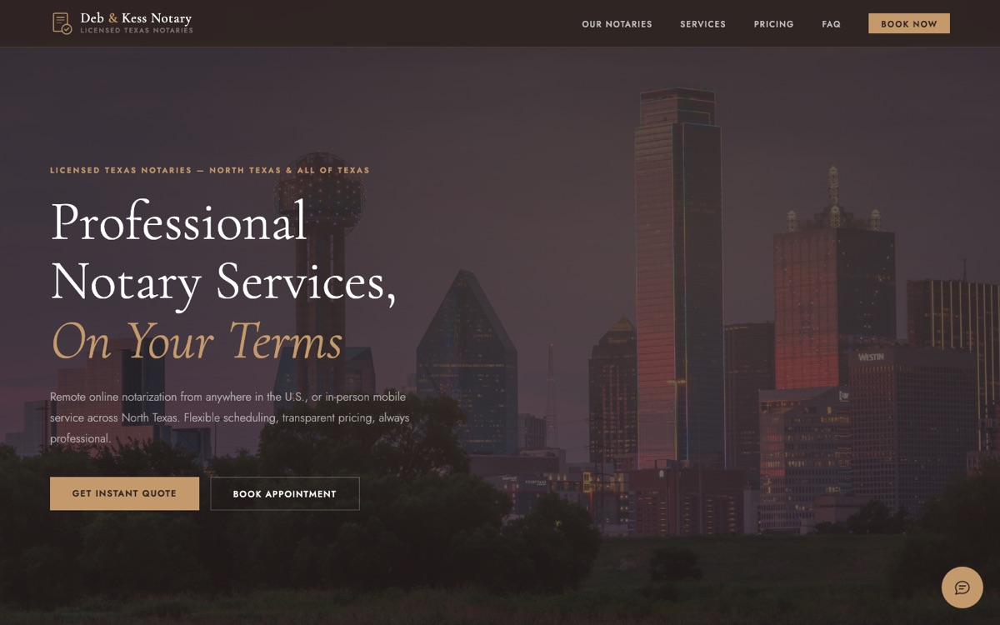

Featured · Entrepreneurship · Web
Deb & Kess Notary
Launched a licensed mobile and remote notary business, then designed and shipped its live website with an AI chat assistant for routine client questions.
- Netlify
- GitHub
- AI-assisted dev
- Proof.com